全文翻译
摘要
一致性模型（CM）（Song 等人，2023）以样本质量为代价加速了基于分数的扩散模型采样，但缺乏一种自然的方式来权衡质量和速度。为解决这一限制，我们提出了一致性轨迹模型（CTM），这是一个将 CM 和基于分数的模型作为特例包含在内的通用框架。CTM 训练单个神经网络，该网络可以在单次前向传播中输出分数（即对数密度的梯度），并支持在扩散过程的概率流常微分方程（PF ODE）中任意初始时间和结束时间之间进行无限制的遍历。CTM 能够高效结合对抗训练和去噪分数匹配损失以提升性能，在 CIFAR - 10（FID 1.73）和 64×64 分辨率的 ImageNet 上，实现了单步扩散模型采样的最新最先进 FID 结果。CTM 还支持一系列新的采样方案，包括确定性和随机性方案，这些方案涉及沿 ODE 解轨迹的长跳跃。随着计算预算的增加，CTM 持续改善样本质量，避免了 CM 中出现的质量退化问题。此外，与 CM 不同，CTM 对分数函数的访问可以简化扩散社区中已建立的可控/条件生成方法的采用，这种访问还支持似然计算。代码可在 https://github.com/sony/ctm 获得。
1 引言
深度生成模型面临着不同的训练和采样挑战。变分自编码器（VAE）（Kingma & Welling, 2013）易于训练，但可能会遭受后验崩溃，导致样本模糊；而生成对抗网络（GAN）（Goodfellow 等人, 2014）能生成高质量样本，但存在训练不稳定的问题。相反，扩散模型（DM）（Sohl-Dickstein 等人, 2015; Ho 等人, 2020; Song 等人, 2020b）通过学习分数（即对数密度的梯度）（Song & Ermon, 2019）解决了这些问题，能够生成高质量样本。然而，与擅长快速采样的 VAE 和 GAN 相比，DM 涉及渐进去噪过程，采样速度较慢，需要进行大量的模型评估。
基于分数的扩散模型通过求解与预设前向过程（该过程向数据添加噪声）相对应的反向时间（随机或确定性）过程来合成数据（Song & Ermon, 2019; Song 等人, 2020b）。尽管随机微分方程（SDE）或常微分方程（ODE）的高级数值求解器（Lu 等人, 2022b; Zhang & Chen, 2022）大幅减少了所需的函数评估次数（NFE），但由于所有微分方程求解器都存在固有的离散化误差（De Bortoli 等人, 2021），进一步的改进仍然具有挑战性。因此，近期在样本效率方面的发展主要集中在蒸馏模型（Salimans & Ho, 2021）（图1）上，这些模型直接估计概率流（PF）ODE 样本轨迹上的积分，分摊了数值求解器的计算成本，一致性模型（CM）（Song 等人, 2023）就是一个典型例子。然而，当 NFE 增加时，它们的生成质量并未提高（图 7 的红色曲线）。本文中的定理 1 解释了 CM 的多步采样中缺乏速度-质量权衡的内在原因，即跳跃之间的时间间隔重叠。当像 CM 那样仅将跳跃训练到零时间时，这一问题始终是一个根本性问题。
| 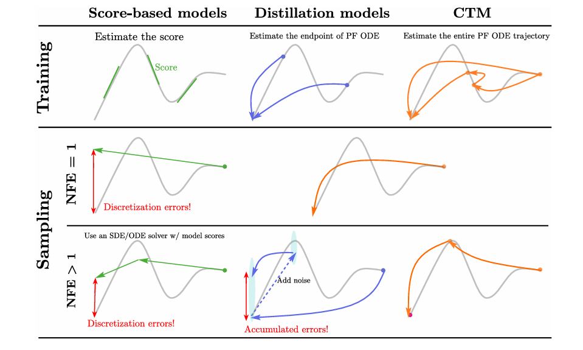 |
|---|
| 图1：基于分数的模型、蒸馏模型与CTM的训练和采样比较。基于分数的模型在求解SDE/ODE时存在离散化误差，而蒸馏模型在多步采样中会累积误差。CTM通过γ-采样（γ=0）缓解了这些问题。 |
本文引入了一致性轨迹模型（CTM），作为一个统一框架，同时评估 PF ODE 的被积函数（分数函数）和积分（跳跃），从而架起了基于分数的模型和蒸馏模型之间的桥梁。更具体地说，CTM 估计 PF ODE 上从任意时间到任意时间的跳跃，范围从极小的跳跃（分数函数）到长跳跃（任意时间范围内的积分），在推理时提供了更高的灵活性。特别地，我们的独特特性支持一种名为 γ-采样的新采样方法，该方法沿着解轨迹交替进行前向和后向跳跃，其中 γ 控制随机性水平。
CTM 沿 PF ODE 从任意时间到任意时间的跳跃也极大地增强了其训练灵活性。它允许结合蒸馏损失和辅助损失，如去噪分数匹配（DSM）损失和对抗损失。这些辅助损失衡量数据分布和样本分布之间的统计散度，为更好地学习跳跃提供了高质量的训练信号。值得注意的是，利用这些统计散度来训练学生模型，使我们能够将学生模型训练得与教师模型一样好，这再次证实了分类任务蒸馏社区中的传统观点，即除蒸馏损失外的辅助损失可以提高学生模型的性能。在实验中，我们在 CIFAR-10（Krizhevsky, 2009）和 64×64 分辨率的 ImageNet（Russakovsky 等人, 2015）的密度估计和图像生成方面都取得了新的最先进（SOTA）性能。
2 预备知识
在扩散模型（DM）（Sohl-Dickstein 等人，2015；Song 等人，2020b）中，编码器结构由一组连续时间随机变量构成，这些随机变量由固定的前向扩散过程定义为 $d x_{t}=\sqrt{2 t} ~d w_{t}$，初始条件为数据变量 $x_{0} \sim p_{\text {data }}$。从时间 $T$ 到 0 的反向时间过程（Anderson，1982）建立为 $d x_{t}=-2 t \nabla \log p_{t}\left(x_{t}\right) d t+\sqrt{2 t} ~d \overline{w}_{t}$，其中 $\overline{w}_{t}$ 是反向时间的标准维纳过程，$p_{t}(x)$ 是遵循前向过程的 $x_{t}$ 的边际密度。当反向时间过程以 $x_{T} \sim p_{T}$ 初始化时，该反向时间过程的解与前向时间过程的解在边际（分布）上一致。反向时间过程的确定性对应物，称为概率流 ODE（PF ODE）（Song 等人，2020b），由下式给出：
其中 $p_{t 0}\left(x | x_{t}\right)$ 是从时间 $t$ 到零的反向时间随机过程的解的概率分布，初始值为 $x_{t}$。这里，$\mathbb{E}_{p_{t 0}\left(x | x_{t}\right)}\left[x | x_{t}\right]=x_{t}+t \nabla \log p_{t}\left(x_{t}\right)$ 是去噪器函数（Efron，2011），是分数函数 $\nabla \log p_{t}\left(x_{t}\right)$ 的另一种表达形式。为了符号简洁，全文中我们省略了去噪器期望中的下标 $p_{t 0}\left(x | x_{t}\right)$。
在实践中，去噪器 $\mathbb{E}\left[x | x_{t}\right]$ 由神经网络 $D_{\phi}$ 近似，通过最小化去噪分数匹配（DSM）（Vincent，2011；Song 等人，2020b）损失 $\mathbb{E}_{x_{0}, t, p_{0 t}\left(x | x_{0}\right)}\left[\left|x_{0}-D_{\phi}(x, t)\right|_{2}^{2}\right]$ 获得，其中 $p_{0 t}\left(x | x_{0}\right)$ 是从时间 0 到 $t$ 的转移概率，初始值为 $x_{0}$。有了近似的去噪器，经验 PF ODE 由下式给出：
从 DM 采样涉及求解 PF ODE，这等价于计算积分：
其中 $x_{T}$ 是从近似 $p_{T}$ 的先验分布 $\pi$ 中采样得到的。DM 的解码策略主要分为两类：使用时间离散化数值积分求解器的基于分数的采样，以及使用神经网络直接估计积分的蒸馏采样。
基于分数的采样：任何现成的 ODE 求解器，记为 $\text{Solver}\left(x_{T}, T, 0 ; \phi\right)$（初始值为时间 $T$ 时的 $x_{T}$，结束于时间 0），都可以直接用于求解方程（2）（Song 等人，2020b）。例如，DDIM（Song 等人，2020a）对应一阶欧拉求解器，而 EDM（Karras 等人，2022）引入了二阶 Heun 求解器。尽管数值求解器最近有了进展（Lu 等人，2022b；Zhang & Chen，2022），但由于所有求解器都存在固有的离散化误差（De Bortoli 等人，2021），进一步的改进可能具有挑战性，最终限制了在少量 NFE 下获得的样本质量。
蒸馏采样：蒸馏模型（Salimans & Ho，2021；Meng 等人，2023）通过使用单个神经网络评估直接估计方程（2）的积分，成功分摊了采样成本。然而，它们的多步采样方法（Song 等人，2023）随着 NFE 的增加表现出样本质量下降的问题，缺乏计算预算（NFE）和样本保真度之间的明确权衡。此外，多步采样不是确定性的，导致样本方差不可控。有关详细的文献综述，请参考附录 A。
3 CTM：基于分数模型与蒸馏模型的统一框架
为解决基于分数的采样和蒸馏采样所面临的挑战，我们引入了一致性轨迹模型（CTM），该模型整合了两种解码策略，可通过求解SDE/ODE或沿PF ODE轨迹进行任意时间点间的直接跳跃来实现采样。
3.1 CTM的解码器表示
CTM可预测PF ODE轨迹的极小步长跳跃和长步长跳跃。具体而言，我们将$G(x_t, t, s)$定义为PF ODE从初始时间$t$到最终时间$s \leq t$的解：
为实现稳定训练，我们将$G$表示为$x_t$和函数$g$的混合（灵感源自欧拉求解器）：
其中$g(x_t, t, s) = x_t + \frac{t}{t-s}\int_t^s \frac{x_u - \mathbb{E}[x|x_u]}{u} du$。我们将神经跳跃预测为：
即$x_t$与神经输出$g_\theta$的组合。这确保神经跳跃$G_\theta$自然满足初始条件$G_\theta(x_t, t, t) = x_t$，从而将神经网络训练中的优化问题从有约束转化为无约束。图2对比了CTM与先前模型的学习目标。
| 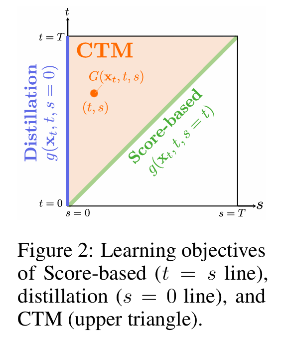 |
|---|
| 图2：基于分数的模型（t=s线）、蒸馏模型（s=0线）和CTM（上三角）的学习目标。 |
当$s$趋近于$t$时，$g$的一个关键特性显现出来。根据定义可得：
因此，对$g$的估计不仅能近似$t$到$s$的跳跃，还能近似极小的$t$到$t$跳跃（去噪器函数）。实际上，通过泰勒展开可得：
因此，$g(x_t, t, s)$（对于一般的$s \leq t$）可解释为去噪器函数加上泰勒展开的余项。
3.2 蒸馏损失：软一致性损失
为实现轨迹学习，CTM需使神经跳跃$G_\theta$与真实跳跃$G$匹配，即对于任意$s \leq t$，有$G_\theta(x_t, t, s) \approx G(x_t, t, s)$。我们选择通过与预训练PF ODE的数值求解器$\text{Solver}(x_t, t, s; \phi)$的解进行比较来训练$G_\theta$：
若教师模型$\phi$完美时，求解器可准确重构$G(x_t, t, s)$，且在学生网络足够灵活的情况下，最优$G_{\theta^*}(x_t, t, s)$与真实值$G(x_t, t, s)$一致。
为更精确地估计整个解轨迹，我们引入软一致性匹配。如图3所示，软一致性比较两种$s$时刻的预测：一种来自教师模型，另一种来自学生模型。更准确地说，目标预测是教师模型和学生模型的混合，其中我们在$(u, t)$区间上求解教师PF ODE，并使用停止梯度的学生模型跳跃到$s$。简而言之，软一致性比较：
其中随机$u \in [s, t)$决定了要蒸馏的教师信息量，$\text{sg}$是指数移动平均停止梯度$\text{sg}(\theta) \leftarrow \text{stopgrad}(\mu \text{sg}(\theta) + (1-\mu)\theta)$。
| 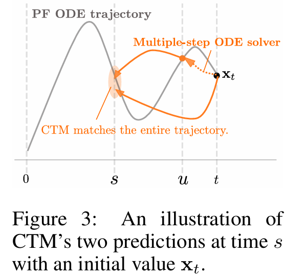 |
|---|
| 图3：CTM在时间s处的两个预测的图示，初始值为$x_t$。 |
通过选择$u$，这种软匹配涵盖了两种框架：
- 当$u = s$时，公式(3)强制全局一致性，即学生模型在整个区间$(s, t)$上蒸馏教师信息。
- 当$u = t - \Delta t$时，公式(3)是局部一致性，即学生模型仅在单步区间$(t - \Delta t, t)$上蒸馏教师信息。此外，当$s = 0$时，它成为CM的蒸馏目标。
为量化学生预测$G_\theta(x_t, t, s)$与教师预测$G_{\text{sg}(\theta)}(\text{Solver}(x_t, t, u; \phi), u, s)$之间的差异，我们通过停止梯度学生模型$G_{\text{sg}(\theta)}(\cdot, s, 0)$将两个$s$时刻的预测传输到0时刻，在干净数据空间中使用特征距离$d$。更具体地说，传输后的预测变为$x_{\text{est}}(x_t, t, s) := G_{\text{sg}(\theta)}(G_\theta(x_t, t, s), s, 0)$和$x_{\text{target}}(x_t, t, u, s) := G_{\text{sg}(\theta)}(G_{\text{sg}(\theta)}(\text{Solver}(x_t, t, u; \phi), u, s), s, 0)$。综上，CTM损失定义为：
在最优情况下，这会使神经跳跃与求解经验PF ODE（公式1）所提供的跳跃相匹配，详细内容见附录B（命题3和5）。
3.3 用于学生模型更好训练的辅助损失
在分类问题的知识蒸馏中，众所周知，学生分类器的表现通常与教师分类器相当，甚至更优。一个关键因素是来自数据标签的直接训练信号。更准确地说，学生损失$L_{\text{distill}}(\text{教师}, \text{学生}) + L_{\text{cls}}(\text{数据}, \text{学生})$结合了蒸馏损失$L_{\text{distill}}$和分类器损失$L_{\text{cls}}$，为学生提供了带有数据标签的高质量信号。
然而，在生成任务中，蒸馏模型的样本质量往往低于教师模型，这主要是因为模型优化仅依赖蒸馏损失。在我们的方法中，我们通过引入来自DSM和对抗损失的直接信号来促进学生学习，将分类蒸馏的原理扩展到我们的模型。
首先，我们用DSM损失指导学生训练，其表达式为：
从DSM损失中获得的最优$g_{\theta^{\ast}}$为$g_{\theta^{\ast}}(x_t, t, t) = \mathbb{E}[x|x_t] = g(x_t, t, t)$。因此，DSM损失在$s \approx t$时通过充当正则化器来提高跳跃精度。我们注意到，当$s \to t$时，DSM损失缓解了$g$学习中的梯度消失问题（因为缩放因子$1 - \frac{s}{t} \to 0$），并显著提高了小神经跳跃的准确性。
其次，我们采用对抗训练来增强学生学习，利用GAN损失：
其中$d_\eta$是判别器。这种对抗损失的灵感来自VQGAN（Esser等人，2021），其表明重建损失和对抗损失的组合有利于生成质量。
总之，CTM将蒸馏损失、DSM损失和GAN损失整合到一个统一的训练框架中：
并解决极小极大问题$\min_\theta \max_\eta \mathcal{L}(\theta, \eta)$。遵循VQGAN，我们采用自适应加权，其中$\lambda_{\text{DSM}} = \frac{|\nabla_{\theta_L} \mathcal{L}_{\text{CTM}}(\theta; \phi)|}{|\nabla_{\theta_L} \mathcal{L}_{\text{DSM}}(\theta)|}$和$\lambda_{\text{GAN}} = \frac{|\nabla_{\theta_L} \mathcal{L}_{\text{CTM}}(\theta; \phi)|}{|\nabla_{\theta_L} \mathcal{L}_{\text{GAN}}(\theta; \eta)|}$，其中$\theta_L$是UNet输出块的最后一层。
这种自适应加权通过平衡各项的梯度规模，显著稳定了训练。算法4总结了CTM的训练算法。
4 使用CTM进行采样
CTM通过$g_{\theta}(x_{t}, t, t)$实现精确的分数评估，支持使用ODE/SDE求解器进行标准的基于分数的采样。在高维图像合成中，如图4的前两列所示，CTM的表现与使用Heun方法作为PF ODE求解器的EDM相当。
CTM还支持沿解轨迹的时间遍历，从而实现新引入的γ-采样方法，参见算法2和图5。假设采样时间步为$T = t_{0} > \cdots > t_{N} = 0$。对于$x_{t_{0}} \sim \pi$（其中π是先验分布），γ-采样将$x_{t_{0}}$去噪到时间$G_{\theta}(x_{t_{0}}, t_{0}, \sqrt{1-\gamma^{2}} t_{1})$，并通过前向扩散将该神经样本扰动到时间$t_{1}$的噪声水平。γ-采样迭代这种来回遍历，直到到达时间$t_{N} = 0$。
我们的γ-采样是一种新的蒸馏采样器，它统一了先前提出的采样技术，包括蒸馏采样和基于分数的采样。
- 图5-(a)：当$\gamma = 1$时，它与CM中引入的多步采样一致，这种采样完全是随机的，当NFE变化时会导致语义变化，例如比较图4第三列中NFE为4和40的样本与NFE为1的确定性样本。在固定$x_{T}$的情况下，CTM在图4第四列中重现了CM的样本。
- 图5-(c)：当$\gamma = 0$时，它变成估计PF ODE解的确定性蒸馏采样。γ-采样与基于分数的采样之间的一个关键区别是CTM避免了离散化误差，例如比较图4最左列（基于分数的）样本和最右列（$\gamma = 0$蒸馏）样本。
- 图5-(b)：当$0 < \gamma < 1$时，它推广了EDM的随机采样器（算法1）。附录B.4表明，γ-采样的样本方差与$\gamma^{2}$成比例缩放。
| 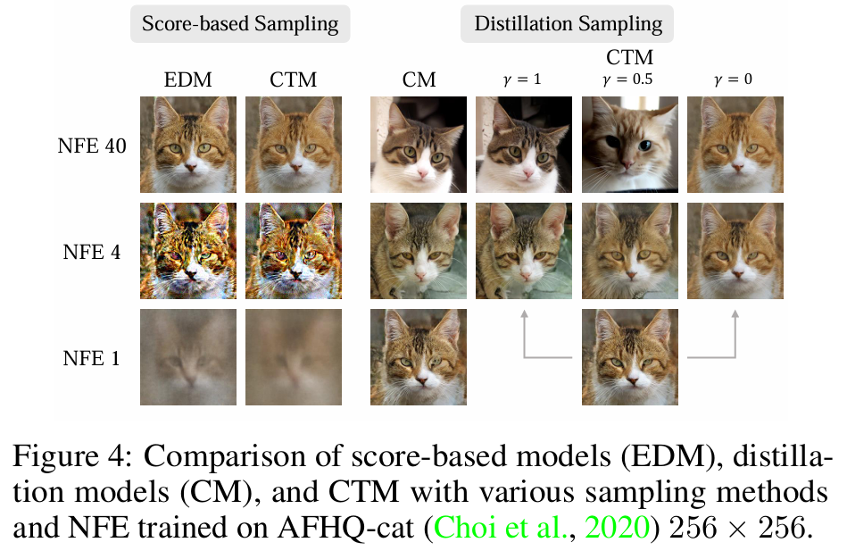 | |
|---|---|
| 图4：在AFHQ-cat（256×256）上训练的基于分数的模型（EDM）、蒸馏模型（CM）和CTM在各种采样方法和NFE下的比较。 | 图5：不同γ值的γ-采样图示。它通过网络评估进行去噪，并通过(t_n 去噪→√(1−γ²)t_{n+1} 加噪→t_{n+1})_{n=0}^{N−1} 反向迭代扩散样本。 |
γ的最佳选择取决于实际应用和经验配置（Karras等人，2022；Xu等人，2023）。图6展示了基于笔画生成中的γ-采样（Meng等人，2021），结果表明$\gamma = 1$的采样器导致与参考笔画的显著语义偏差，而较小的γ值产生更接近的语义对齐并保持高保真度。此外，图7展示了γ对生成性能的影响。在图7-(a)中，当NFE较小时，γ的影响较小，但随着NFE的增加，只有$\gamma \approx 0$的设置表现得与Heun求解器相似。另外，CM的多步采样（$\gamma = 1$）随着NFE的增加显著降低了样本质量。这种与γ相关的质量恶化在NFE较高时变得更加明显，如图7-(b)所示，这可能是由于在迭代神经跳跃到零时间的过程中误差累积所致。我们用以下定理中的两步γ-采样示例来解释这种现象，广义的N步结果见定理8。
| 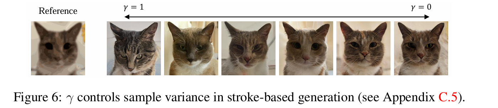 |
|---|
| 图6：γ控制基于笔画生成中的样本方差（见附录C.5）。 |
| 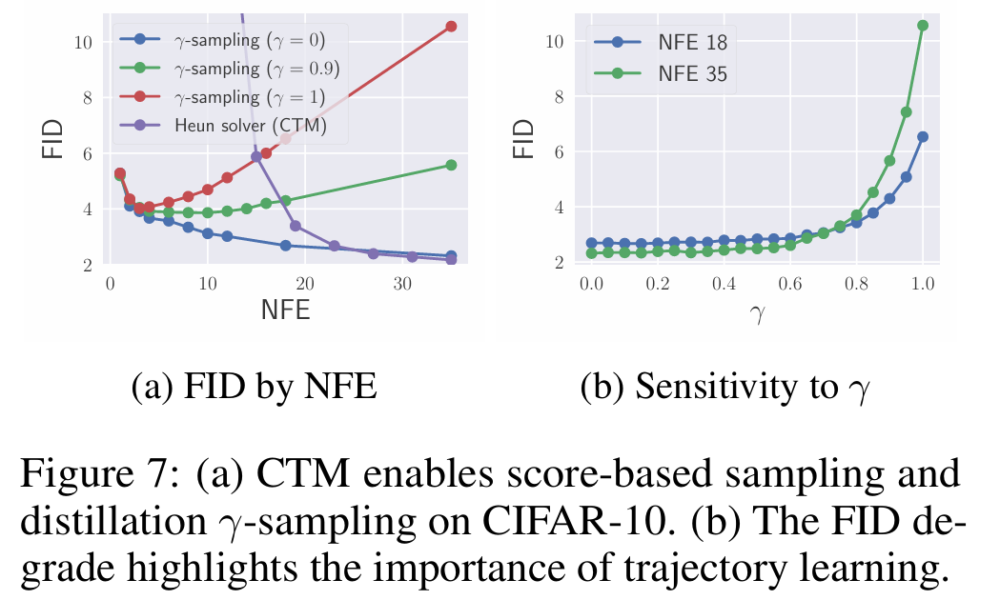 |
|---|
| 图7：（a）CTM在CIFAR-10上支持基于分数的采样和蒸馏γ-采样。（b）FID下降凸显了轨迹学习的重要性。 |
定理1（非正式的两步γ-采样）。设$t \in (0, T)$且$\gamma \in [0, 1]$。设$p_{\theta^{\ast}, 2}$表示使用最优CTM的γ-采样器从$p_{T}$开始，经过转移序列$T \to \sqrt{1-\gamma^{2}} t \to t \to 0$得到的密度。则$D_{TV}(p_{\text{data}}, p_{\theta^{\ast}, 2}) = O(\sqrt{T - \sqrt{1-\gamma^{2}} t + t})$。
当变为N步时，$\gamma = 1$的γ-采样对每个步骤n从$t_{n}$到0进行迭代长跳跃，这会将误差累积到$O(\sqrt{T + t_{1} + \cdots + t_{N}})$。相比之下，$\gamma = 0$时跳跃之间不存在这种时间重叠，消除了误差累积，仅产生$O(\sqrt{T})$的误差，见附录C.2。总之，CTM通过$\gamma = 0$解决了蒸馏模型中与大NFE相关的挑战，并消除了基于分数模型中的离散化误差。
5 实验
5.1 学生模型（CTM）优于教师模型（DM）——定量分析
我们在CIFAR-10和64×64分辨率的ImageNet上评估CTM，使用来自EDM（CIFAR-10）和CM（ImageNet）的预训练扩散检查点作为教师模型。我们采用EDM的训练配置来计算$\mathcal{L}_{DSM}(\theta)$，并使用StyleGAN-XL（Sauer等人，2022）的判别器来计算$\mathcal{L}_{GAN}(\theta, \eta)$。对于学生模型，在CIFAR-10上我们使用EDM的DDPM++实现；在ImageNet上使用CM的ADM实现。除了这些默认架构，我们还通过带有位置嵌入（Vaswani等人，2017）的辅助时间嵌入来整合s信息，并将此嵌入添加到t嵌入中。我们对CM的设计进行了最小修改以符合先前的实现，重要修改列于附录D.1的表4中：1）我们发现用于停止梯度EMA的大μ值显著稳定了对抗训练；2）我们使用0.999的学生EMA率评估模型性能；3）我们将预训练扩散模型的跳跃连接和输出缩放重新用于神经输出建模：$g_{\theta}(x_{t}, t, s) = c_{skip}(t)x_{t} + c_{out}(t)NN_{\theta}(x_{t}, t, s)$，其中$NN_{\theta}$是神经网络。$c_{skip}$和$c_{out}$的选择确保初始化的$g_{\theta}(x_{t}, t, t)$与预训练去噪器紧密一致，并从s嵌入中引入轻微随机噪声。重新使用$c_{skip}$和$c_{out}$引导学生网络专注于训练长跳跃，同时在初始训练阶段通过$\mathcal{L}_{DSM}$保持小跳跃的准确性。因此，与相应基线相比，CIFAR-10仅需100K次迭代（快10倍），ImageNet仅需30K次迭代（快20倍）即可实现良好性能。
CIFAR-10：CTM的NFE 1的FID（1.98）不仅在无条件生成上优于CM（3.55），其条件生成的FID（1.73）还超越了SOTA模型，如EDM（35 NFE时FID为1.82）和StyleGAN-XL（1.85）。此外，CTM在2 NFE时实现了SOTA的FID（1.63），超越了所有先前的生成模型。这些CIFAR-10上的结果是基于CM的官方PyTorch代码获得的，使用其代码重新训练CM得到的无条件FID为10.53，显著差于报告的3.55。此外，CTM通过$g_{\theta}(x_{t}, t, t)$近似分数的能力支持负对数似然（NLL）评估（Song等人，2021；Kim等人，2022b），建立了新的SOTA NLL。这种改进部分归因于当$u = s$时CTM的重建损失，以及与 oracle 过程更好的对齐（Lai等人，2023a）。
ImageNet：CTM在FID上超越了所有先前的无引导生成模型。此外，CTM的IS最接近验证数据的IS，这意味着StyleGAN-XL倾向于生成被特定类别分类可能性更高的样本，甚至超过真实世界验证数据的概率，而CTM的生成在分类器似然方面统计上更一致。在样本多样性方面，CTM报告了中等水平的召回率，但图16中的随机样本显示实际样本与EDM或CM的样本多样性相当。最后，我们强调表1和表2中的所有结果都是在30K次训练迭代内实现的，仅需要训练CM和EDM所需迭代次数的5%。
分类器拒绝采样：CTM的快速采样支持分类器拒绝采样。在评估中，对于每个类别，我们根据预测的类别概率从$\frac{50}{1-r}$个样本中选择前50个样本，其中r是拒绝率。这种采样器与NFE 1采样结合，平均消耗NFE$\frac{1}{1-r}$。如图8所示，CTM展示了与需要250次高NFE的分类器引导结果（Ho & Salimans，2021）相当的FID-IS权衡（样本见图17）。
| 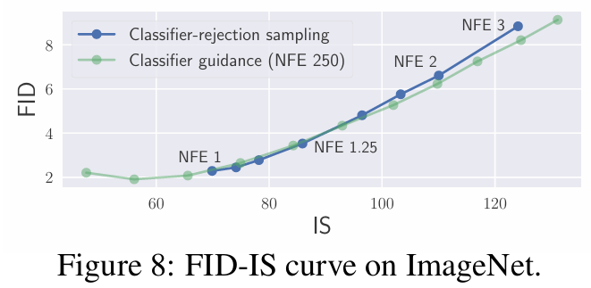 |
|---|
| 图8：ImageNet上的FID-IS曲线。 |
5.2 定性分析
CTM损失：图10表明软一致性优于局部一致性，且性能与全局一致性相当。具体而言，局部一致性仅蒸馏1步教师信息，因此用于从$x_T$开始的神经跳跃训练的教师信息未使用时间区间$[0, T-\Delta t]$的信息，而是使用$t \in [0, T-\Delta t]$的$[t-\Delta t, t]$区间的教师信息来训练从$x_t$开始的神经跳跃。因此，学生模型必须外推跨时间区间学习到的分散教师信息，以估计从$x_T$开始的跳跃，这可能导致估计不精确。相比之下，软一致性中要蒸馏的教师信息量由随机u决定，其中$u=0$表示蒸馏整个区间$[0, T]$的教师信息，见附录C.3。因此，软匹配是一种计算高效且高性能的损失。
| 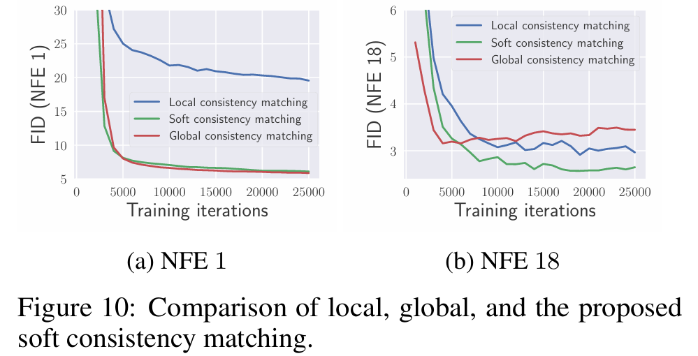 |
|---|
| 图10：局部一致性匹配、软一致性匹配和全局一致性匹配的比较。 |
DSM损失：图11说明了将$\mathcal{L}_{DSM}$与$\mathcal{L}_{CTM}$结合的两个好处。除非DSM权重超过CTM，否则它在小NFE时保持样本质量；对于大NFE采样，由于精确的分数估计，它显著提高了样本质量。在全文中，基于图11的见解，我们将$\lambda_{DSM}$保持为自适应权重（CTM + 1.0DSM的情况）。
| 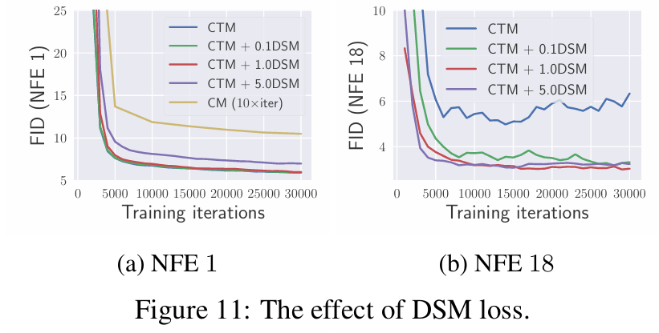 |
|---|
| 图11：DSM损失的影响。 |
GAN损失：图12突出了整合GAN损失对小NFE和大NFE样本质量的好处。在图9中，CTM展示了比教师模型更优的样本生成能力，GAN细化了局部细节。在全文中，我们实现了GAN预热策略：在预热迭代期间使用$\lambda_{GAN}=0$停用GAN训练，随后按照VQGAN的方法使用自适应$\lambda_{GAN}$激活GAN训练。关于GAN对生成样本影响的更多见解在附录C.4中讨论。
| 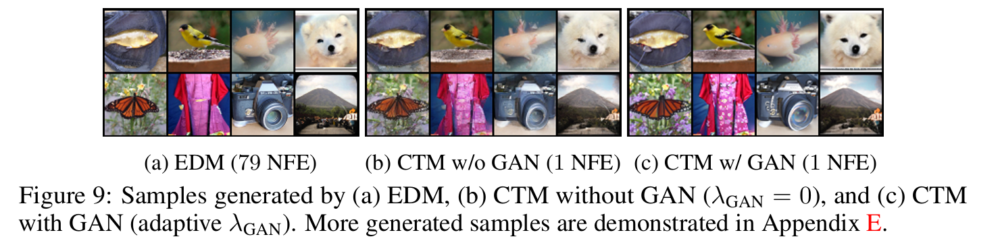 |
|---|
| 图9：由（a）EDM、（b）不含GAN的CTM（λ_{GAN}=0）和（c）含GAN的CTM（自适应λ_{GAN}）生成的样本。更多生成的样本见附录E。 |
| 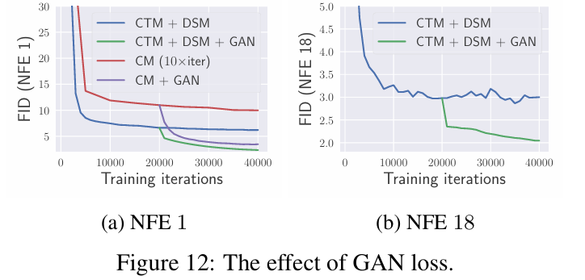 |
|---|
| 图12：GAN损失的影响。 |
无预训练DM的训练：利用我们的分数学习能力，我们用CTM的近似$g_{\theta}(x_{t}, t, t)$替换预训练分数近似$D_{\phi}(x_{t}, t)$，从而获得相应的经验PF ODE $dx_t = \frac{x_t - g_{\theta}(x_{t}, t, t)}{t}$。因此，我们可以构造无预训练目标$\hat{x}_{target} := G_{sg(\theta)}(G_{sg(\theta)}(\text{Solver}(x_{t}, t, u; sg(\theta))), u, s), s, 0)$，以替换计算CTM损失$\mathcal{L}_{CTM}$时的$x_{target}$。当与DSM和GAN损失结合时，它在无条件CIFAR-10上实现了NFE 1的FID为2.39，性能与预训练DM相当。与CM相比，我们的CTM通过其分数近似能力使用相同形式的损失。
6 结论
CTM作为一种新型生成模型，解决了现有模型中的问题。通过独特的训练方法访问中间PF ODE解，它支持无限制的时间遍历，并与先前模型的训练优势无缝集成。作为一致性模型和扩散模型的通用框架，CTM在训练和采样方面均表现出色。值得注意的是，它超越了其教师模型，在CIFAR-10和64×64分辨率的ImageNet上，实现了少步扩散模型采样的FID和似然的最新结果，凸显了其多功能性和有效性。